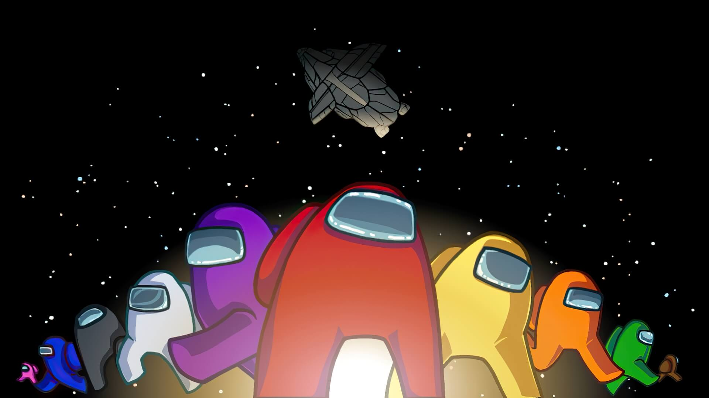

LIVE EXPERIENCEROBLOX
Brainchip Arena
Fast, chaotic arena action. I contributed game development and an original score to the project.
- Game development
- Original score
Playing now: Loading…Discord online: Loading…
♫ ORIGINAL SCOREListen on Spotify ↗
Matthew J. Peffer / Buffalo, NY
Unique game mechanics, original scores, and real-time audio tools.
Fast, chaotic arena action. I contributed game development and an original score to the project.

Score contribution for the next major update of the popular Friday Night Funkin' mod. This work has not been released yet.
Contributing development and an original score to an upcoming experience. Public details are limited while the project is in development.
Live player counts update every five minutes. Discord presence counts are approximate and may be unavailable when public endpoints cannot be reached.
RADIO
EMBEDDED AUDIO / C++
A real-time audio device for effects like reverb, granulation, half-time, and reverse. Includes a chain-based effect flow and custom stereo bit manipulation.
BROWSER TOOL / WEB MIDI
A browser-based MIDI practice app with falling-note visualization, step sequencing, chord analysis, pitch detection, and practice analytics.
AUDIO PLUGIN / C++
A low-latency multi-band EQ built with a flexible filter chain for shaping frequency, Q, and gain in real time.
I'm a developer and composer who likes the overlap between interactive systems and sound. I've worked with game teams to ship mechanics and player-facing features, and I make audio tools when I want to understand the signal path all the way down.
Work featured in Windbound, Peroxide, Brainchip Arena, & Vs. Imposter
Contact me at:
For game development, audio work, or any creative problem-solving opportunities, please email me.